A guide on how to use the package gglyph
Valentin Velev (University of Konstanz)
2025-09-15
Source:vignettes/gglyph.Rmd
gglyph.RmdThe Package
gglyph is a package for creating directed network-style
graphs for statistical and non-statistical data with custom edges. It
builds on ggplot2 and includes four functions:
-
geom_glyph(): Create a network-based graph that illustrates pairwise relationships (statistical and non-statistical) using custom edges -
process_data_statistical(): Process statistical data (e.g., pairwise t-tests) for plotting -
process_data_general(): Process general / non-statistical data (any data with directional relationships) for plotting -
generate_mock_data(): Create mock data for experimenting withgeom_glyph()
The pipeline is as follows:
- Obtain a dataset with directed pairwise relationships. This can be
done using the function
generate_mock_data()or by using your own dataset (e.g., running pairwise t-tests on your data). - Process the dataset using either
process_data_statistical()orprocess_data_general(). - Create a glyph plot with
geom_glyph().
The package also includes two datasets:
- PISA 2022: The Programme for International Student Assessment (PISA) is a global evaluation study conducted by the Organisation for Economic Co-operation and Development (OECD) that assesses the scholastic performance of 15-year-old students in reading, math, and science. It is held every three years and provides comparative data for countries to understand and improve their education systems.
- SIPRI Military Expenditure Database: The Stockholm International Peace Research Institute (SIPRI) Military Expenditure Database comprises panel data on the amount of financial resources dedicated by a state to raising and maintaining the state’s armed forces. The database includes data in local currencies, constant (2022) and current US dollars, as a share of gross domestic product (GDP), and per capita.
In the following chapter, I will illustrate how the main function
geom_glyph() works and how its arguments are related to
common ggplot2 arguments.
The Plotting Function
Basics
To begin with, I have created a table table showing the equivalence
of geom_glyph() arguments and common ggplot2
arguments.
| geom_glyph Argument | ggplot2 Equivalent | Explanation |
|---|---|---|
edge_colour, node_colour
|
color
|
Controls the outline color of the nodes/edges. |
edge_fill, node_fill
|
fill
|
Controls the fill color of the nodes/edges. |
edge_alpha, node_alpha
|
alpha
|
Controls the transparency of the nodes/edges. |
edge_size, node_size
|
size
|
Controls the size of the nodes/edges. |
node_spacing
|
N/A |
Controls the space between the nodes; not a standard
ggplot2 argument.
|
node_shape
|
shape
|
Controls the shape of the nodes. |
label_size
|
fontsize in grid::gpar()
|
Controls the font size of the node labels. |
group_label_size
|
theme(strip.text)
|
Controls the font size of the facet labels (group titles). |
legend_title
|
title in guides()
|
Sets the main title text within the legend. |
legend_subtitle
|
title in guides()
|
Sets an additional subtitle. |
Some Examples
Now I will set up the vignette:
# Load packages
library(gglyph)
library(tidyverse)
library(readr)
library(haven)
library(purrr)
library(viridisLite)
library(kableExtra)
library(patchwork)
library(ggthemes)
# Remove scientific notation
options(scipen = 999, digits = 3)
# Set seed for reproducibility
set.seed(42)And create mock data using the custom function
generate_mock_data(), which comprises several arguments
listed in Table 2:
| Argument | Explanation |
|---|---|
n_nodes
|
Number of nodes. Default is 5. |
n_edges
|
Number of edges. Default is 7. |
n_groups
|
Number of groups. Default is 1 (ungrouped). |
statistical
|
Boolean indicator for whether to generate statistical data. Default is FALSE. |
p_threshold
|
Statistical significance threshold. Default is 0.05. |
This function can be used if you want to just play around with
geom_glyph(). Here is how it can be used:
mock_data <- generate_mock_data(n_nodes = 5, n_edges = 10, statistical = TRUE)
mock_data_grouped <- generate_mock_data(n_nodes = 5, n_edges = 10, n_groups = 3, statistical = TRUE)This is what data that can be directly passed to
geom_glyph() must look like (more on this in the chapter on
the data wrangling functions):
| to | from | significance | threshold | angle.from | x.from | y.from | angle.to | x.to | y.to | type | label | angle | x | y |
|---|---|---|---|---|---|---|---|---|---|---|---|---|---|---|
| B | A | 0.046 | 0.05 | 1.571 | 0.000 | 1.000 | 0.314 | 0.951 | 0.309 | edge | NA | NA | NA | NA |
| C | A | 0.046 | 0.05 | 1.571 | 0.000 | 1.000 | -0.942 | 0.588 | -0.809 | edge | NA | NA | NA | NA |
| D | C | 0.026 | 0.05 | -0.942 | 0.588 | -0.809 | -2.199 | -0.588 | -0.809 | edge | NA | NA | NA | NA |
| E | B | 0.047 | 0.05 | 0.314 | 0.951 | 0.309 | -3.456 | -0.951 | 0.309 | edge | NA | NA | NA | NA |
| E | C | 0.012 | 0.05 | -0.942 | 0.588 | -0.809 | -3.456 | -0.951 | 0.309 | edge | NA | NA | NA | NA |
| NA | NA | NA | NA | NA | NA | NA | NA | NA | NA | node | A | 1.571 | 0.000 | 1.000 |
| NA | NA | NA | NA | NA | NA | NA | NA | NA | NA | node | B | 0.314 | 0.951 | 0.309 |
| NA | NA | NA | NA | NA | NA | NA | NA | NA | NA | node | C | -0.942 | 0.588 | -0.809 |
| NA | NA | NA | NA | NA | NA | NA | NA | NA | NA | node | D | -2.199 | -0.588 | -0.809 |
| NA | NA | NA | NA | NA | NA | NA | NA | NA | NA | node | E | -3.456 | -0.951 | 0.309 |
| to | group | from | significance | threshold | angle.from | x.from | y.from | angle.to | x.to | y.to | type | label | angle | x | y |
|---|---|---|---|---|---|---|---|---|---|---|---|---|---|---|---|
| C | Group 1 | A | 0.038 | 0.05 | 1.571 | 0.000 | 1.000 | -0.942 | 0.588 | -0.809 | edge | NA | NA | NA | NA |
| C | Group 1 | B | 0.001 | 0.05 | 0.314 | 0.951 | 0.309 | -0.942 | 0.588 | -0.809 | edge | NA | NA | NA | NA |
| E | Group 1 | B | 0.021 | 0.05 | 0.314 | 0.951 | 0.309 | -3.456 | -0.951 | 0.309 | edge | NA | NA | NA | NA |
| E | Group 1 | C | 0.039 | 0.05 | -0.942 | 0.588 | -0.809 | -3.456 | -0.951 | 0.309 | edge | NA | NA | NA | NA |
| E | Group 1 | D | 0.000 | 0.05 | -2.199 | -0.588 | -0.809 | -3.456 | -0.951 | 0.309 | edge | NA | NA | NA | NA |
| NA | Group 1 | NA | NA | NA | NA | NA | NA | NA | NA | NA | node | A | 1.571 | 0.000 | 1.000 |
| NA | Group 1 | NA | NA | NA | NA | NA | NA | NA | NA | NA | node | B | 0.314 | 0.951 | 0.309 |
| NA | Group 1 | NA | NA | NA | NA | NA | NA | NA | NA | NA | node | C | -0.942 | 0.588 | -0.809 |
| NA | Group 1 | NA | NA | NA | NA | NA | NA | NA | NA | NA | node | D | -2.199 | -0.588 | -0.809 |
| NA | Group 1 | NA | NA | NA | NA | NA | NA | NA | NA | NA | node | E | -3.456 | -0.951 | 0.309 |
| D | Group 2 | B | 0.004 | 0.05 | 0.314 | 0.951 | 0.309 | -2.199 | -0.588 | -0.809 | edge | NA | NA | NA | NA |
| E | Group 2 | C | 0.017 | 0.05 | -0.942 | 0.588 | -0.809 | -3.456 | -0.951 | 0.309 | edge | NA | NA | NA | NA |
| E | Group 2 | D | 0.026 | 0.05 | -2.199 | -0.588 | -0.809 | -3.456 | -0.951 | 0.309 | edge | NA | NA | NA | NA |
| NA | Group 2 | NA | NA | NA | NA | NA | NA | NA | NA | NA | node | A | 1.571 | 0.000 | 1.000 |
| NA | Group 2 | NA | NA | NA | NA | NA | NA | NA | NA | NA | node | B | 0.314 | 0.951 | 0.309 |
| NA | Group 2 | NA | NA | NA | NA | NA | NA | NA | NA | NA | node | C | -0.942 | 0.588 | -0.809 |
| NA | Group 2 | NA | NA | NA | NA | NA | NA | NA | NA | NA | node | D | -2.199 | -0.588 | -0.809 |
| NA | Group 2 | NA | NA | NA | NA | NA | NA | NA | NA | NA | node | E | -3.456 | -0.951 | 0.309 |
| C | Group 3 | B | 0.000 | 0.05 | 0.314 | 0.951 | 0.309 | -0.942 | 0.588 | -0.809 | edge | NA | NA | NA | NA |
| D | Group 3 | A | 0.038 | 0.05 | 1.571 | 0.000 | 1.000 | -2.199 | -0.588 | -0.809 | edge | NA | NA | NA | NA |
| D | Group 3 | B | 0.020 | 0.05 | 0.314 | 0.951 | 0.309 | -2.199 | -0.588 | -0.809 | edge | NA | NA | NA | NA |
| D | Group 3 | C | 0.036 | 0.05 | -0.942 | 0.588 | -0.809 | -2.199 | -0.588 | -0.809 | edge | NA | NA | NA | NA |
| E | Group 3 | A | 0.001 | 0.05 | 1.571 | 0.000 | 1.000 | -3.456 | -0.951 | 0.309 | edge | NA | NA | NA | NA |
| E | Group 3 | B | 0.016 | 0.05 | 0.314 | 0.951 | 0.309 | -3.456 | -0.951 | 0.309 | edge | NA | NA | NA | NA |
| NA | Group 3 | NA | NA | NA | NA | NA | NA | NA | NA | NA | node | A | 1.571 | 0.000 | 1.000 |
| NA | Group 3 | NA | NA | NA | NA | NA | NA | NA | NA | NA | node | B | 0.314 | 0.951 | 0.309 |
| NA | Group 3 | NA | NA | NA | NA | NA | NA | NA | NA | NA | node | C | -0.942 | 0.588 | -0.809 |
| NA | Group 3 | NA | NA | NA | NA | NA | NA | NA | NA | NA | node | D | -2.199 | -0.588 | -0.809 |
| NA | Group 3 | NA | NA | NA | NA | NA | NA | NA | NA | NA | node | E | -3.456 | -0.951 | 0.309 |
With this data we can plot some basic glyphs using the previously generated mock data:
# Non-grouped
ggplot(data = mock_data) +
geom_glyph()
# Grouped
ggplot(data = mock_data_grouped) +
geom_glyph() +
facet_wrap(~ group)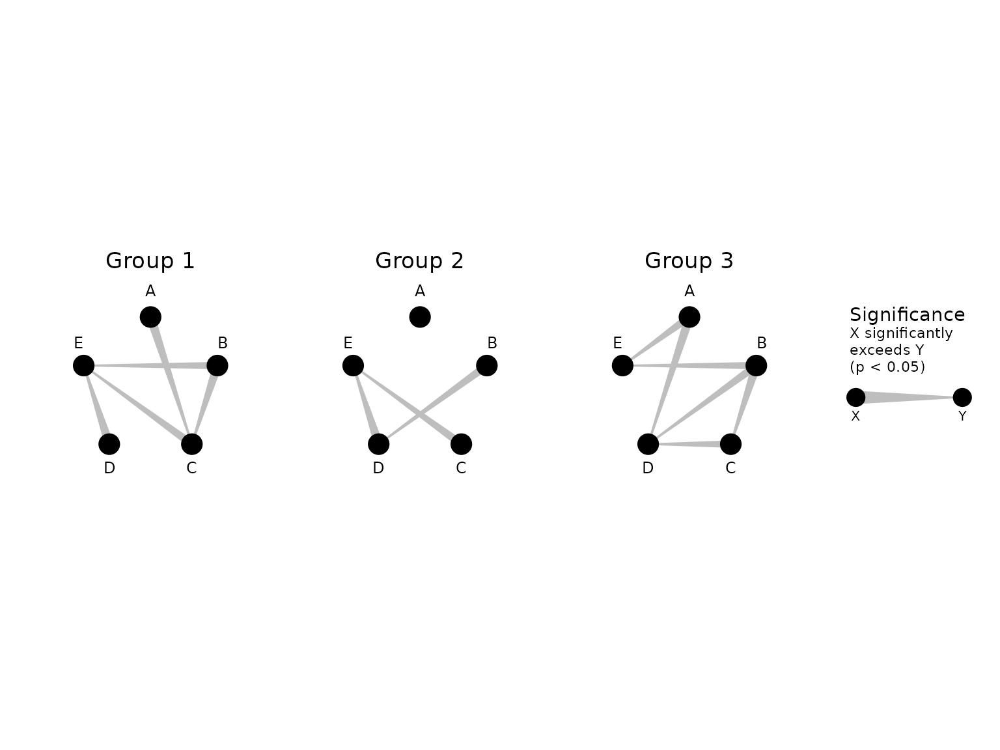
Note that the function works well with up to 9 nodes:
plot_list <- list()
for (num_nodes in 3:9) {
data <- generate_mock_data(n_nodes = num_nodes, n_edges = num_nodes * 5, statistical = TRUE)
p <- ggplot(data = data) +
geom_glyph(label_size = 9, node_size = 0.5)
plot_list[[length(plot_list) + 1]] <- p
}
final_grid <- wrap_plots(plot_list, ncol = 2)
final_grid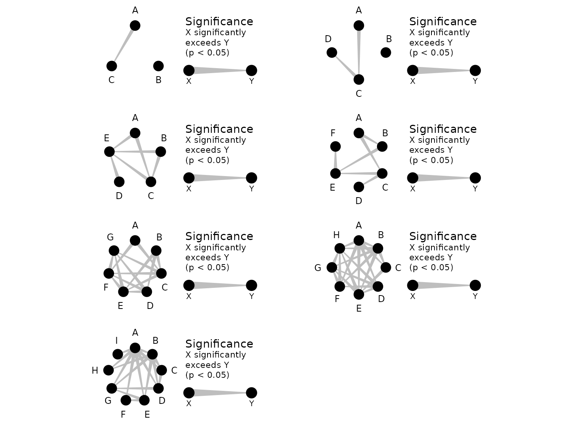
This style of plots was first used in this paper, where the authors investigated the relationship between spokesperson and the likelihood of message resharing during the COVID-19 pandemic using pairwise statistical tests. In that paper, the plots were painstakingly created manually in Photoshop. Now we have a package for that ;).
Some Prettier Examples… Well, depends on the eye of the beholder
These plots can also be improved aesthetically using the arguments in Table 1. To illustrate, I will use the mock data created earlier.
First, you can change the fill color of the nodes and edges.
Note that if an edge or a node outline colour is provided but not a fill colour, the outline colour is used for both. This also applies if a fill colour is provided but no outline colour.
Furthermore, if you use a colour function such as
viridis and you do not manually set a
scale_*_manual() (more on this below), you will always get
the default legend (black nodes and grey edge).
# Non-grouped
ggplot(data = mock_data) +
geom_glyph(node_fill = "purple", edge_fill = "purple")
# Grouped
ggplot(data = mock_data_grouped) +
geom_glyph(node_fill = viridis, edge_fill = viridis) +
facet_wrap(~ group)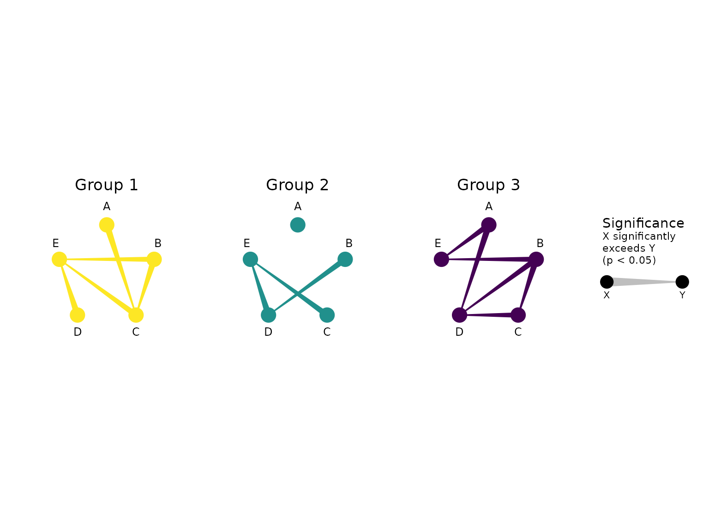
Next, you can change the outline color of the nodes and edges:
# Non-grouped
ggplot(data = mock_data) +
geom_glyph(
node_colour = "black",
node_fill = "purple",
edge_colour = "black",
edge_fill = "purple"
)
# Grouped
ggplot(data = mock_data_grouped) +
geom_glyph(
node_colour = "black",
node_fill = viridis,
edge_colour = "black",
edge_fill = viridis
) +
facet_wrap(~ group)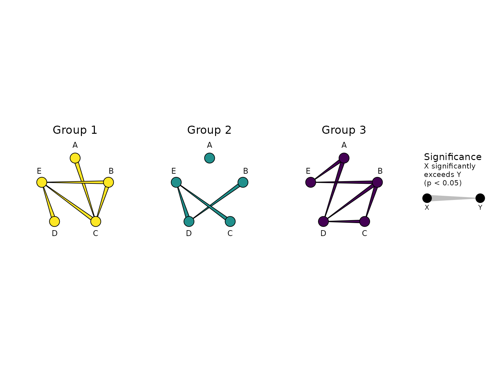
Further, you can change the size of both the nodes and the edges:
# Non-grouped
ggplot(data = mock_data) +
geom_glyph(
node_colour = "black",
node_fill = "purple",
node_size = 0.5,
edge_colour = "black",
edge_fill = "purple",
edge_size = 0.75
)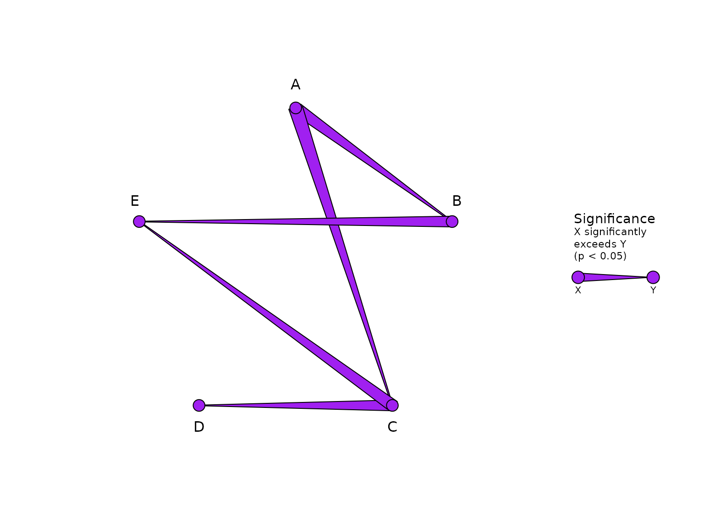
# Grouped
ggplot(data = mock_data_grouped) +
geom_glyph(
node_colour = "black",
node_fill = "purple",
node_size = 0.5,
edge_colour = "black",
edge_fill = "purple",
edge_size = 0.75
) +
facet_wrap(~ group)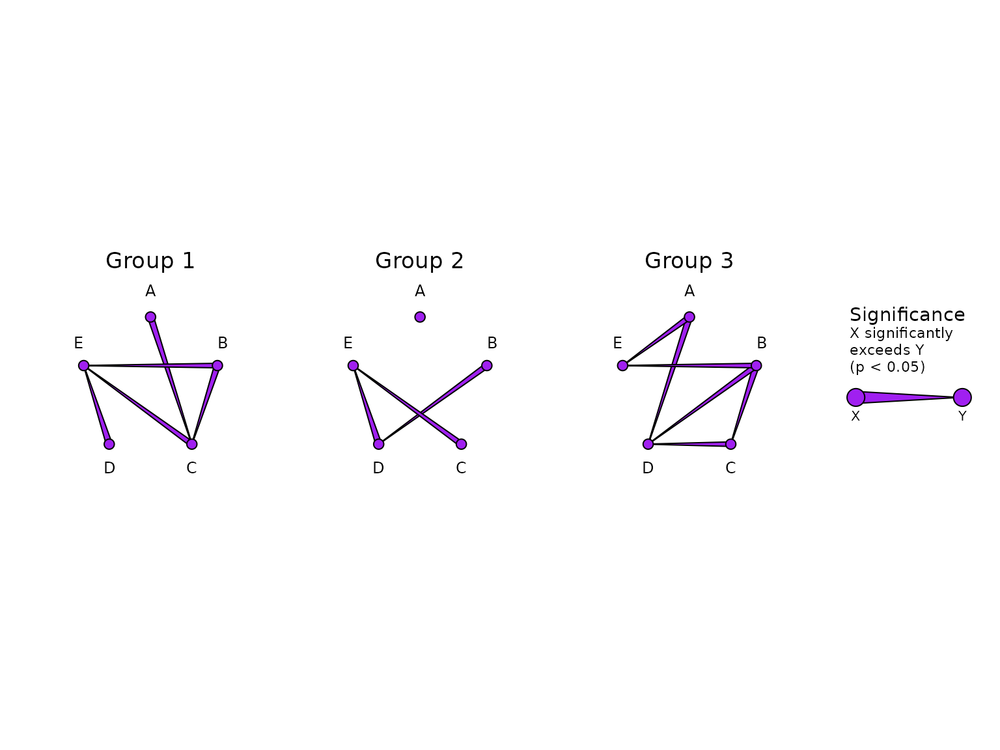
Then, you can change the transparency of the nodes and the edges as well as the spacing between the nodes:
# Non-grouped
ggplot(data = mock_data) +
geom_glyph(
node_colour = "black",
node_fill = "purple",
node_size = 0.5,
node_alpha = 0.5,
node_spacing = 0.5,
edge_colour = "black",
edge_fill = "purple",
edge_size = 0.75,
edge_alpha = 0.5
)
# Grouped
ggplot(data = mock_data_grouped) +
geom_glyph(
node_colour = "black",
node_fill = "purple",
node_size = 0.5,
node_alpha = 0.5,
node_spacing = 0.5,
edge_colour = "black",
edge_fill = "purple",
edge_size = 0.75,
edge_alpha = 0.5
) +
facet_wrap(~ group)The shape of the nodes can also be changed. Click here
for a list of all ggplot2 shapes.
# Non-grouped
ggplot(data = mock_data) +
geom_glyph(
node_colour = "black",
node_fill = "purple",
node_size = 0.5,
node_alpha = 0.5,
node_spacing = 0.5,
node_shape = 24,
edge_colour = "black",
edge_fill = "purple",
edge_size = 0.75,
edge_alpha = 0.5
)
# Grouped
ggplot(data = mock_data_grouped) +
geom_glyph(
node_colour = "black",
node_fill = "purple",
node_size = 0.5,
node_alpha = 0.5,
node_spacing = 0.5,
node_shape = 24,
edge_colour = "black",
edge_fill = "purple",
edge_size = 0.75,
edge_alpha = 0.5
) +
facet_wrap(~ group)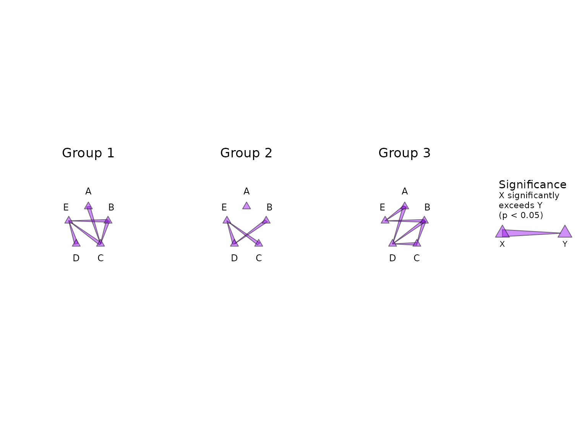
In addition, the size of the labels can be changed:
# Non-grouped
ggplot(data = mock_data) +
geom_glyph(
node_colour = "black",
node_fill = "purple",
node_size = 0.5,
node_alpha = 0.5,
node_spacing = 0.5,
node_shape = 24,
edge_colour = "black",
edge_fill = "purple",
edge_size = 0.75,
edge_alpha = 0.5,
label_size = 14
)
# Grouped
ggplot(data = mock_data_grouped) +
geom_glyph(
node_colour = "black",
node_fill = "purple",
node_size = 0.5,
node_alpha = 0.5,
node_spacing = 0.5,
node_shape = 24,
edge_colour = "black",
edge_fill = "purple",
edge_size = 0.75,
edge_alpha = 0.5,
label_size = 10,
group_label_size = 15
) +
facet_wrap(~ group)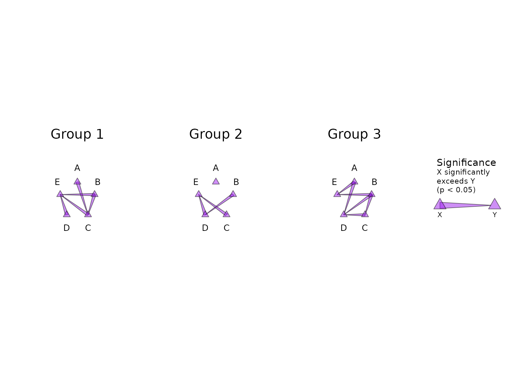
Similarly, the legend title and subtitle can be changed:
# Non-grouped
ggplot(data = mock_data) +
geom_glyph(
node_colour = "black",
node_fill = "purple",
node_size = 0.5,
node_alpha = 0.5,
node_spacing = 0.5,
node_shape = 24,
edge_colour = "black",
edge_fill = "purple",
edge_size = 0.75,
edge_alpha = 0.5,
label_size = 14,
legend_title = "Legend Title",
legend_subtitle = "Legend Subtitle"
)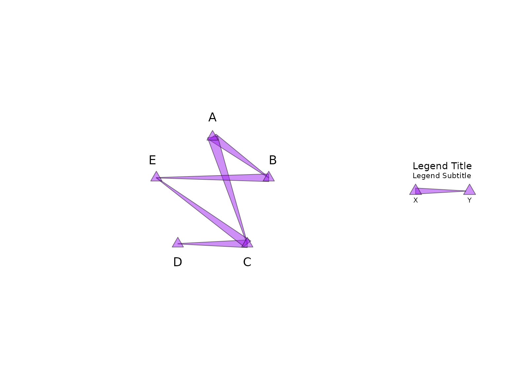
# Grouped
ggplot(data = mock_data_grouped) +
geom_glyph(
node_colour = "black",
node_fill = "purple",
node_size = 0.5,
node_alpha = 0.5,
node_spacing = 0.5,
node_shape = 24,
edge_colour = "black",
edge_fill = "purple",
edge_size = 0.75,
edge_alpha = 0.5,
label_size = 10,
group_label_size = 15,
legend_title = "Legend Title",
legend_subtitle = "Legend Subtitle"
) +
facet_wrap(~ group)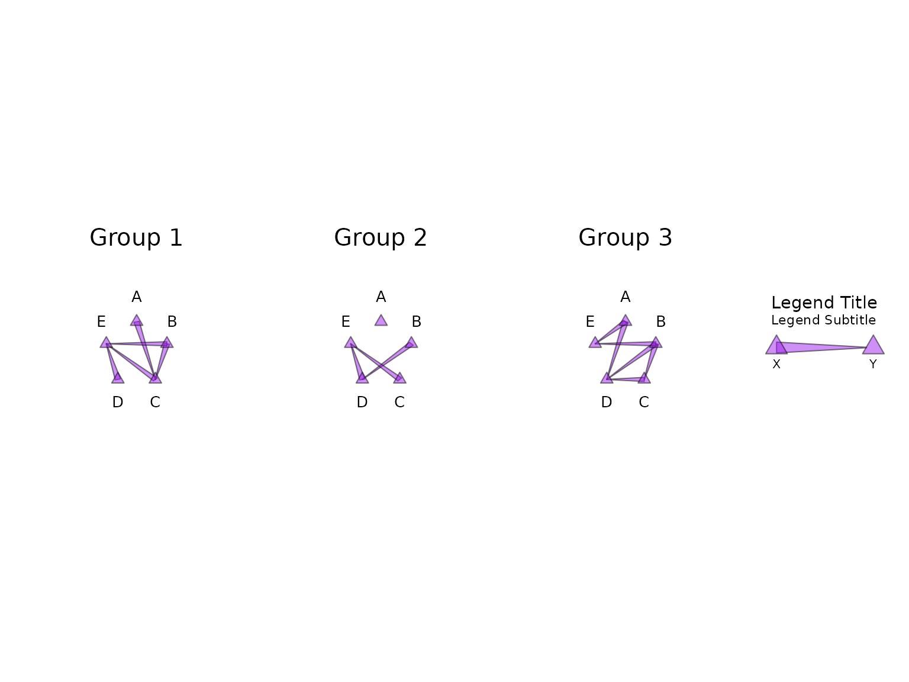
Finally, you can use the standard ggplot2 functions with
+ to change certain aspects of the appearance.
Note that if you would like to use ggplot2’s
scale_*_manual() for a faceted plot, you need specify a
grouping variable in the mapping argument in
ggplot(). Further, scale_colour_manual() and
scale_fill_manual() will apply to the edges and
scale_shape_manual() to the nodes.
Furthermore, if you have data with more than 6 groups and you
manually specify different shapes for each using
scale_shape_manual() the warning:
Warning message:
The shape palette can deal with a maximum of 6 discrete values because more than 6 becomes difficult to
discriminate
ℹ you have requested 9 values. Consider specifying shapes manually if you need that many have them. will appear. This can safely be ignored.
# Non-grouped
ggplot(data = mock_data) +
geom_glyph(
node_colour = "black",
node_fill = "purple",
node_size = 0.5,
node_alpha = 0.5,
node_spacing = 0.5,
node_shape = 24,
edge_colour = "black",
edge_fill = "purple",
edge_size = 0.75,
edge_alpha = 0.5,
label_size = 14,
legend_title = "Legend Title",
legend_subtitle = "Legend Subtitle"
) +
labs(title = "Very Creative Title") +
theme(
legend.box.margin = margin(l = 20, r = 20),
strip.background = element_rect(fill = "white", color = "black", linewidth = 0.5)
)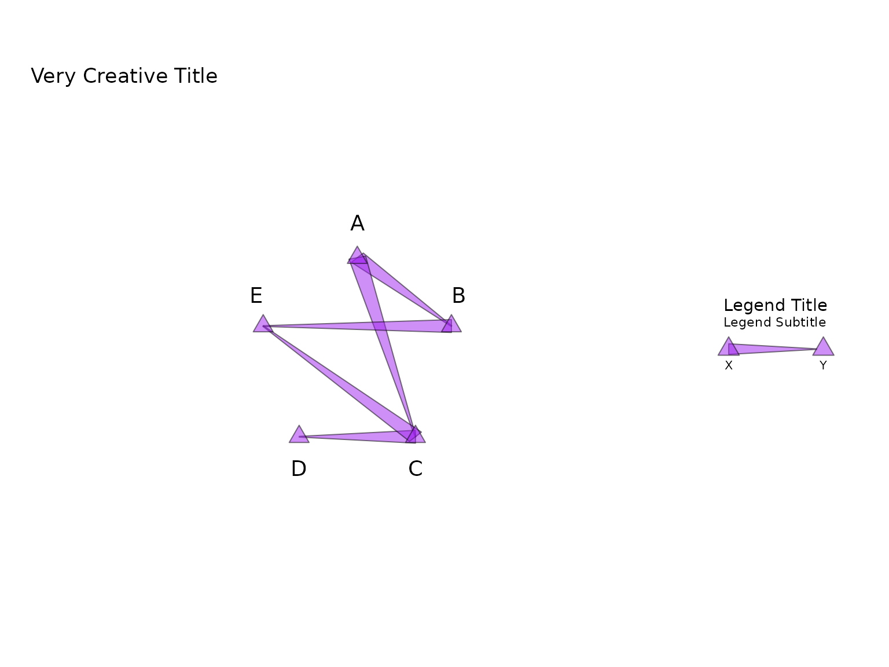
# Grouped
ggplot(data = mock_data_grouped, aes(colour = group, fill = group, shape = group)) +
geom_glyph(
node_colour = "black",
node_fill = "purple",
node_size = 0.5,
node_alpha = 0.5,
node_spacing = 0.5,
edge_size = 0.75,
edge_alpha = 0.5,
label_size = 10,
group_label_size = 15,
legend_title = "Legend Title",
legend_subtitle = "Legend Subtitle"
) +
facet_wrap(~ group) +
labs(title = "Very Creative Title") +
scale_color_manual(values = c("Group 1" = "black", "Group 2" = "green", "Group 3" = "blue")) +
scale_fill_manual(values = c("Group 1" = "red", "Group 2" = "black", "Group 3" = "yellow")) +
scale_shape_manual(values = c("Group 1" = 22, "Group 2" = 23, "Group 3" = 24)) +
theme(
legend.box.margin = margin(l = 20, r = 20),
strip.background = element_rect(fill = "white", color = "black", linewidth = 0.5)
)## Ignoring unknown labels:
## • size : "<span style='font-size:11pt'>Legend Title</span><br><span
## style='font-size:8.5pt;'>Legend Subtitle</span>"Please note again that if you manually set the colour, fill, or
shape, you should not use the corresponding
geom_glyph() argument.
In the following chapter, I will briefly go over the two functions for data wrangling and demonstrate how they together with the two datasets can be used to create glyphs.
The Data Wrangling Functions
As mentioned above, gglyph includes two functions for
data wrangling process_data_statistical and
process_data_general. In the table below, I have listed the
different arguments for each function.
| Argument | Explanation |
|---|---|
data
|
A DataFrame to be processed. |
from
|
Column name for the start nodes. |
to
|
Column name for the end nodes. |
group
|
Column name for the grouping variable. |
sig*
|
Column name for the significance level. |
tresh*
|
Significance threshold. Default is 0.05. |
* Argument is only available in
process_data_statistical.
|
To illustrate how raw data is processed using
process_data_statistical and
process_data_general, I will use the two datasets in
gglyph and show a “before and after”.
First, I will load and wrangle the datasets included in the package (see the first chapter).
For the PISA 2022 dataset, I used the country variable (CNT), the variable indicating the highest educational level attainment by either parent (HISCED), and an average score of the math comprehension items (PV*MATH) to conduct pairwise t-tests (with Bonferroni correction).
For the SIPRI dataset, I will use the absolute amount of military expenditures in current US dollars to create higher-lower pairwise relationships.
For both, I will use the ready-made datasets included in the package. For more information on how they were created, click here.
This is what the two datasets that I will henceforth work with look
like:
| from | to | group | sig |
|---|---|---|---|
| ISCED 2 | ISCED 0&1 | Austria | 1 |
| ISCED 3 | ISCED 0&1 | Austria | 1 |
| ISCED 4&5 | ISCED 0&1 | Austria | 1 |
| ISCED 6+ | ISCED 0&1 | Austria | 1 |
| ISCED 3 | ISCED 2 | Austria | 1 |
| ISCED 4&5 | ISCED 2 | Austria | 1 |
| from | to | group |
|---|---|---|
| China | India | 1995 |
| China | India | 1999 |
| China | India | 2003 |
| China | India | 2007 |
| China | India | 2011 |
| China | India | 2015 |
Compared with after using the the functions
process_data_statistical() or
process_data_general():
# Process the PISA data (statistical data)
## Grouped data
processed_data_pisa_group <- process_data_statistical(
data = pisa_2022,
from = "from",
to = "to",
sig = "sig",
group = "group",
thresh = 0.05
)
## Non-grouped data
processed_data_pisa <- process_data_statistical(
data = pisa_2022[pisa_2022$group == "Germany",],
from = "from",
to = "to",
sig = "sig",
thresh = 0.05
)
# Process the SIPRI MilEx data (non-statistical data)
## Grouped data
processed_data_sipri_group <- process_data_general(
data = sipri_milex_1995_2023,
from = "from",
to = "to",
group = "group"
)
## Non-grouped data
processed_data_sipri <- process_data_general(
data = sipri_milex_1995_2023[sipri_milex_1995_2023$group == "2023",],
from = "from",
to = "to"
)This is what the processed datasets look like:
(Note: I will only show the PISA dataset)
| to | from | significance | angle.from | x.from | y.from | angle.to | x.to | y.to | type | threshold | label | angle | x | y |
|---|---|---|---|---|---|---|---|---|---|---|---|---|---|---|
| ISCED 2 | ISCED 0&1 | 0 | 1.571 | 0.000 | 1.000 | 0.314 | 0.951 | 0.309 | edge | 0.05 | NA | NA | NA | NA |
| ISCED 3 | ISCED 0&1 | 0 | 1.571 | 0.000 | 1.000 | -0.942 | 0.588 | -0.809 | edge | 0.05 | NA | NA | NA | NA |
| ISCED 3 | ISCED 2 | 0 | 0.314 | 0.951 | 0.309 | -0.942 | 0.588 | -0.809 | edge | 0.05 | NA | NA | NA | NA |
| ISCED 4&5 | ISCED 0&1 | 0 | 1.571 | 0.000 | 1.000 | -2.199 | -0.588 | -0.809 | edge | 0.05 | NA | NA | NA | NA |
| ISCED 4&5 | ISCED 2 | 0 | 0.314 | 0.951 | 0.309 | -2.199 | -0.588 | -0.809 | edge | 0.05 | NA | NA | NA | NA |
| ISCED 6+ | ISCED 2 | 0 | 0.314 | 0.951 | 0.309 | -3.456 | -0.951 | 0.309 | edge | 0.05 | NA | NA | NA | NA |
| to | group | from | significance | angle.from | x.from | y.from | angle.to | x.to | y.to | type | threshold | label | angle | x | y |
|---|---|---|---|---|---|---|---|---|---|---|---|---|---|---|---|
| ISCED 0&1 | Czech Republic | ISCED 2 | 0.019 | 0.314 | 0.951 | 0.309 | 1.571 | 0.000 | 1.000 | edge | 0.05 | NA | NA | NA | NA |
| ISCED 2 | Austria | ISCED 0&1 | 0.000 | 1.571 | 0.000 | 1.000 | 0.314 | 0.951 | 0.309 | edge | 0.05 | NA | NA | NA | NA |
| ISCED 2 | Belgium | ISCED 0&1 | 0.000 | 1.571 | 0.000 | 1.000 | 0.314 | 0.951 | 0.309 | edge | 0.05 | NA | NA | NA | NA |
| ISCED 2 | France | ISCED 0&1 | 0.000 | 1.571 | 0.000 | 1.000 | 0.314 | 0.951 | 0.309 | edge | 0.05 | NA | NA | NA | NA |
| ISCED 2 | Germany | ISCED 0&1 | 0.000 | 1.571 | 0.000 | 1.000 | 0.314 | 0.951 | 0.309 | edge | 0.05 | NA | NA | NA | NA |
| ISCED 2 | Greece | ISCED 0&1 | 0.000 | 1.571 | 0.000 | 1.000 | 0.314 | 0.951 | 0.309 | edge | 0.05 | NA | NA | NA | NA |
With this data the following plots can be created:
ggplot(data = processed_data_pisa) +
geom_glyph()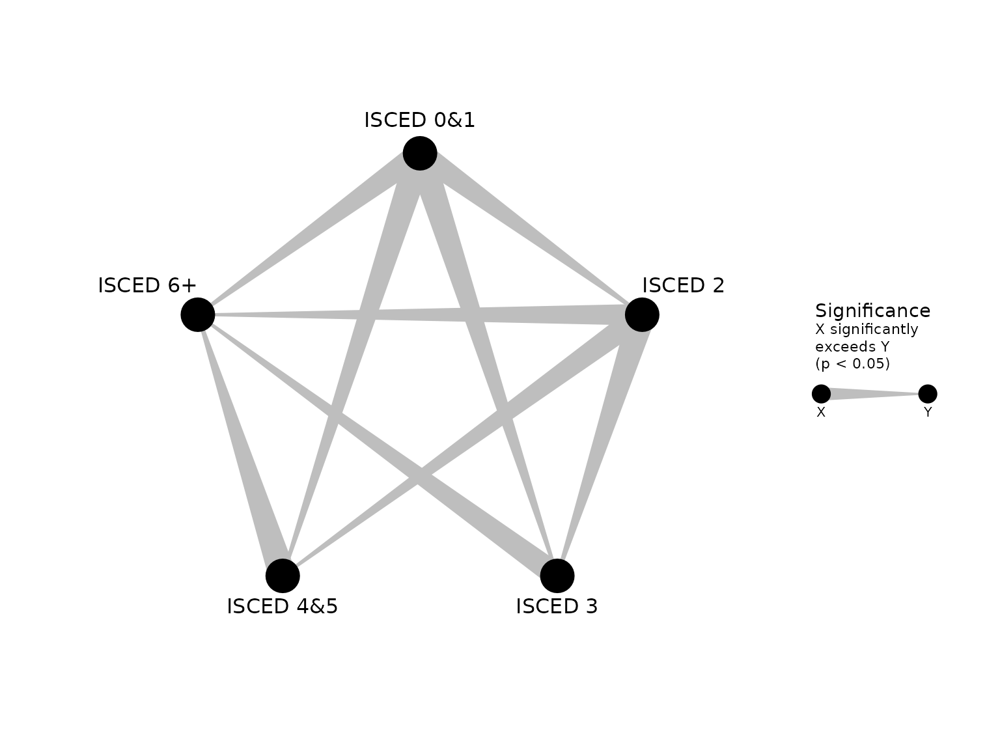
ggplot(data = processed_data_pisa_group) +
geom_glyph() +
facet_wrap(~ group)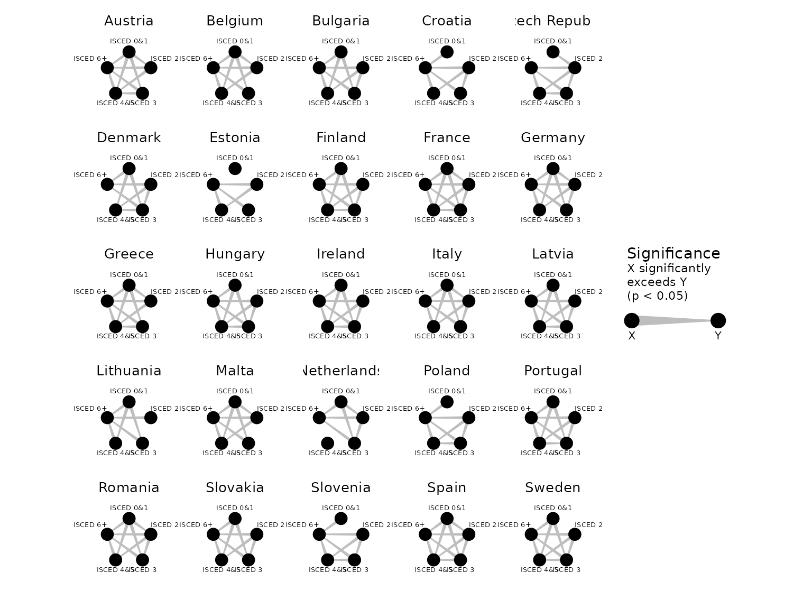
And for the SIPRI dataset:
ggplot(data = processed_data_sipri) +
geom_glyph()
ggplot(data = processed_data_sipri_group) +
geom_glyph() +
facet_wrap(~ group)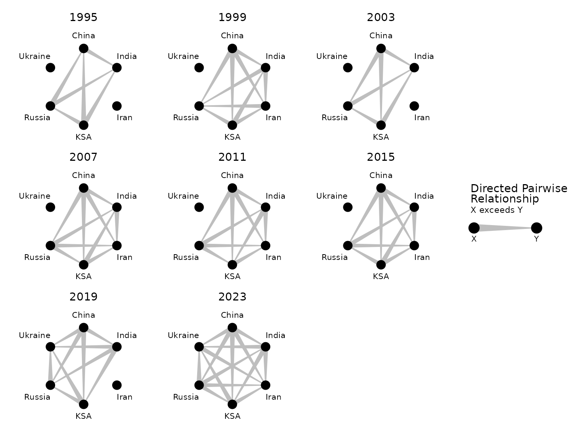
After a bit of polishing, they can look like this:
ggplot(data = processed_data_pisa) +
geom_glyph(
node_size = 1.175,
node_colour = "black",
edge_colour = "orange"
) +
labs(title = "PISA 2022 Parental Education")
ggplot(data = processed_data_pisa_group) +
geom_glyph(
node_size = 0.75,
node_fill = rainbow,
node_colour = "black",
edge_fill = rainbow,
label_size = 3.75,
group_label_size = 7.5
) +
facet_wrap(~ group) +
labs(title = "PISA 2022 Parental Education")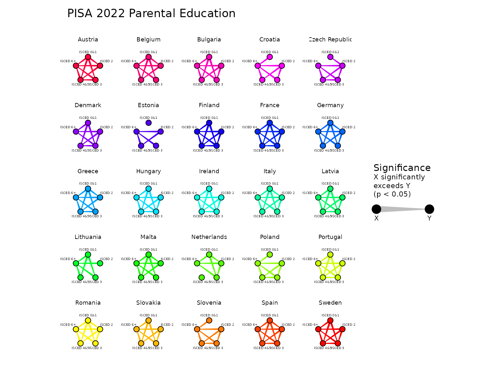
And for the SIPRI dataset:
ggplot(data = processed_data_sipri) +
geom_glyph(
node_size = 1.175,
node_colour = "black",
node_fill = "purple",
edge_fill = "blue"
) +
labs(title = "SIPRI Military Expenditures")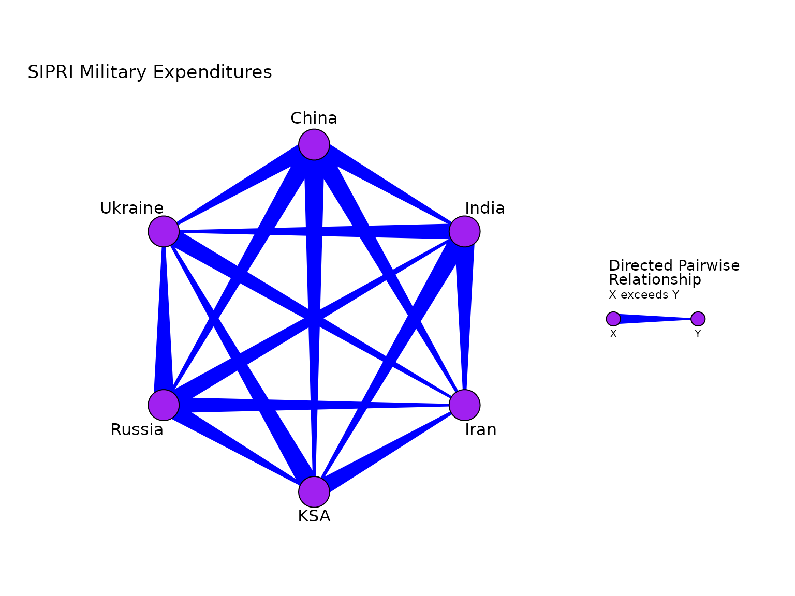
ggplot(data = processed_data_sipri_group) +
geom_glyph(
node_fill = viridis,
node_colour = "black",
edge_fill = viridis
) +
facet_wrap(~ group) +
labs(title = "SIPRI Military Expenditures")Concluding Remarks
You can save the plot using ggsave() from
ggplot2:
Finally, if you find any bugs or if you have any additional features that you would like me to add, please let me know at valentin.velev@uni-konstanz.de.